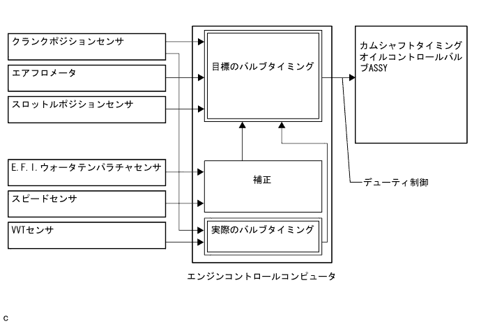
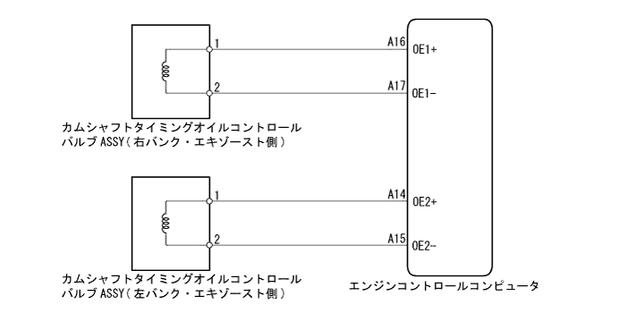
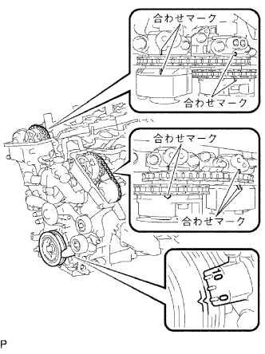
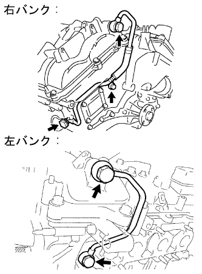

DTC P0017/59 Exhaust VVT Sensor (Out of Range) |
DTC P0019/59 Exhaust VVT Sensor 2 (Out of Range) |

| DTC No. SAE/TCCS | DTC Detection Condition
| Inspection Area |
|---|---|---|
| P0017/59 P0019/59 |
|
|

| Step 1 | Clear DTC |
Connect SST (TaSCAN) to DLC3.
Turn the ignition ON and clear the DTCs following the SST (TaSCAN) screen display. (see)
| NEXT | |
| Step 2 | Read DTC |
Perform a road test.
Check the DTCs by following the SST (TaSCAN) screen display. (see)
|
| ||||
| OK | ||
| ||
| Step 3 | Check for Rough Idle or Engine Stall |
Check the engine idle condition.
| DTC Output | Vehicle Condition | Proceed to |
|---|---|---|
| P0017/59 | Normal idle speed | A |
| P0019/59 | Normal idle speed | B |
| P0017/59 or P0019/59 | Engine stalls or idles roughly | C |
|
| ||||
|
| ||||
| A | |
| Step 4 | Perform TaSCAN Active Test (Exhaust VVT Linear Drive Bank 1) |
Connect SST (TaSCAN) to DLC3.
With the engine stopped, turn the ignition ON.
Following the SST (TaSCAN) screen display, select [Active Test] - [Exhaust VVT Linear Drive Bank 1].
With the engine idling, perform [Not Performed/Performed].
| Active Test (Oil Control Valve Condition) | Engine Condition |
|---|---|
| Performed (OCV operates) | Engine stalls or idles roughly |
| Not performed (OCV does not operate) | Normal idle speed |
|
| ||||
| OK | ||
| ||
| Step 5 | Perform TaSCAN Active Test (Exhaust VVT Linear Drive Bank 2) |
Connect SST (TaSCAN) to DLC3.
With the engine stopped, turn the ignition ON.
Following the SST (TaSCAN) screen display, select [Active Test] - [Exhaust VVT Linear Drive Bank 2].
With the engine idling, perform [Not Performed/Performed].
| Active Test (Oil Control Valve Condition) | Engine Condition |
|---|---|
| Performed (OCV operates) | Engine stalls or idles roughly |
| Not performed (OCV does not operate) | Normal idle speed |
|
| ||||
| OK | ||
| ||
| Step 6 | Inspect Camshaft Timing Oil Control Valve Assembly |
 |
Remove the camshaft timing oil control valve assembly (exhaust side).
Resistance Inspection
Using SST (Toyota electrical tester), measure the resistance between the terminals.
| Tester Connection | Condition | Standard |
|---|---|---|
| Terminal 1 - Terminal 2 | Approx. 20°C | 6.9 to 7.9Ω |
Operation Check
Apply battery voltage between the terminals and check that the spool valve operates.
| Result | Proceed to |
|---|---|
| OK | A |
| RH side malfunction | B |
| LH side malfunction | C |
|
| ||||
|
| ||||
| A | |
| Step 7 | Inspect Valve Timing |
Inspect Valve Timing
Remove the cylinder head cover and cylinder head cover LH.
Turn the crankshaft clockwise and align the notch of the crankshaft pulley with the 0° position.
 |
As shown in the illustration, check that the timing marks of the camshaft timing gears are aligned. If the marks are not aligned, turn the crankshaft clockwise 1 more revolution.
|
| ||||
| OK | |
| Step 8 | Inspect Oil Control Valve Filter |
 |
Remove oil pipe NO.1 or the oil pipe, and remove the oil control valve filter RH or LH.
Check the oil control valve filter for clogging.
|
| ||||
| OK | |
| Step 9 | Inspect and Replace Oil Pipe |
Inspect and replace the oil pipe.
| NEXT | |
| Step 10 | Clear DTC |
Connect SST (TaSCAN) to DLC3.
Turn the ignition ON and clear the DTCs following the SST (TaSCAN) screen display. (see)
| NEXT | |
| Step 11 | Read DTC |
Perform a road test.
Check the DTCs by following the SST (TaSCAN) screen display. (see)
)
|
| ||||
| OK | ||
| ||